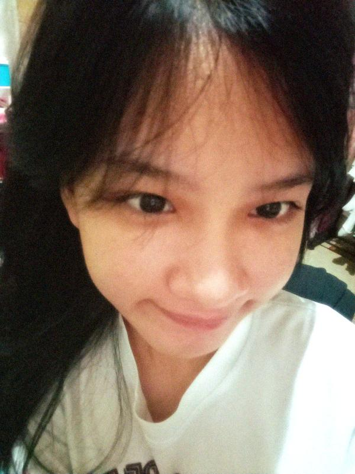
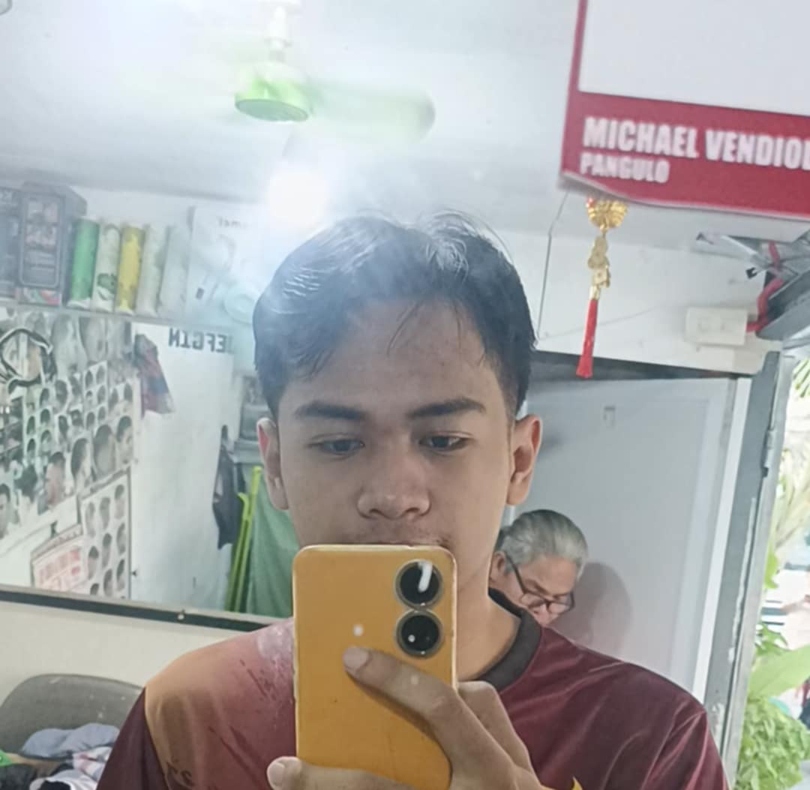

Hello Love! Sorry kung ito lang yung aking nakayanan.
Pero, I assure you naman na wala akong ginastos na pera para dito.
Kasi tulog ko lang naman ang na consume sa pag gawa ng page na 'to huhuhu.
Anyway, sana magustohan mo 'tong page na ginawa ko para sa'yo. :3
P.S. sayang din yung bouquet na napag kasunduan namin ni trexie.
Surprise sana yun eh kung 'di n'ya sinabi aydi may 0.5k s'yaa.
P.S. tap mo yung mga bilog sa baba para mabasa mo yung mga letters ko sa'yo.
-nat
1
4
3
I
My Love,
I was really happy when I first met you in the plaza.
However, I didn’t just feel happy because you noticed the songs I was playing at that time.
The moment you came into my life, I felt peace.
Truly at peace, in a way I hadn’t felt in so long.
That moment, May 28, 2025, became a turning point for me.
May itself was a difficult month, a month I really don't want to remember.
because I was carrying something from February until the end of the semester
Which was in the second week of May, and each day felt unbearable and sad.
But, I was able to be finally free, after trying to stitch myself back together from scratch
and after firmly severing ties with that person from my life.
Someone who left a trauma, because I kept getting nauseous every time I saw them.
But then, in that month was you, there was you.
So it wasn't completely bad, and just by being there,
you brought color into my world.
You didn’t even realize it,
but you made my life brighter in ways I cannot fully explain.
I thought my vacation would be nothing more than empty hours filled with games and movies,
but you changed all of that.
You brought the happiness that was lacking in my life,
where everything at that time felt dull.
You gave me a reason to look forward to the days again.
Then came June, our birth month.
I’ll never forget how your sister spoke to me about our engagement in-game.
It startled me, but at the same time, it filled me with a quiet joy.
That was when I realized just how deeply you had become my most favorite person—
the one I longed to talk to, the one whose presence brought me peace,
the one who turned simple days into cherished memories.
I was already happy, but I wanted more.
I wanted to talk to you every single day,
to spend every moment I could by your side.
And then, the most beautiful thing happened—
you became my girlfriend.

That alone felt like a miracle to me.
You are so adorable, so wonderful, and cute
that you made me say things I never imagined myself capable of saying.
You pulled emotions out of me
I thought were gone forever.
And though it surprised me, it made me happy—
because finally, I could love someone so openly,
and express feelings that I don't have to kept hidden.
Your presence is my peace.
That is why I never stop longing for it,
that's why I never stop longing for you.
I won’t lie to you—sometimes I was afraid.
That fear made me stumble, even lie a few times.
And though you tell me I’m perfect, I know I am not.
I carry flaws, inconsistencies, and habits I’m not proud of.
But know this: I am working on myself every day.
I am learning, I am changing,
because I want to love you better than I did.
I promise to take care of myself,
so that I never lose the chance to take care of you.
You are my love, my peace, my happiness.
You are my home in a harsh world that feels unbearable.
P.S. I miss you more than words will ever be able to say, po.
Always yours,
—Nat

Love
Hello, my Love!! üíå‚ú®
Happy 3rd Monthsary to us! üå∑
How do you like my little pakulo this time?
I know it’s not much compared to the grand things I wish I could give you,
but I poured my heart into this. I really wanted to create something special for you—
something that would show, even in small ways, just how much I love you.
To be honest, medyo naiinis din ako habang ginagawa ‘to haha.
There were so many times na ‘di gumana yung mga gusto kong functions,
ang dami pang bugs na kailangan kong ayusin.
Pero habang ginagawa ko siya, I kept thinking of you—
and suddenly, kahit gaano kahirap, worth it lahat.
When I finally heard the audio playing, grabe… napaiyak talaga ako.
Na-stuck ako for a while kasi hindi ko maituloy yung message.
It hit me so hard how much I love you, and how much I want this to be perfect for you.
I know this may not look grand, but I hope you can feel my sincerity.
I made sure to include all the little things you love,
even your favorite colors, because those small details matter to me.
Every little thing about you matters to me.
We’ve only been together for a short time—3 months pa lang—
but in those 3 months, you’ve already changed so much in my life.
I can’t imagine how dull my days would be without you.
You’ve filled my world with warmth, laughter, and meaning.
I wake up excited knowing I get to love you another day.
And I fall asleep every night missing you, hoping you’re sleeping well.
I know you’re a very hardworking person.
You carry so much responsibility, and I admire that about you.
But at the same time, mahal, I worry about you a lot.
When you skip meals, when you lose sleep, when you push yourself too hard—
I feel helpless, kasi I just want to take care of you.
So please, love, always remember: you don’t have to carry the world alone.
Take care of yourself. Rest when you can.
I want to see you happy, healthy, and safe—always.
I also know that now, things are not as easy as before.
The honeymoon phase has ended, and reality starts to show.
There will be misunderstandings, challenges, and hard days.
But that doesn’t scare me—because I believe in us.
I believe in what we have, in the love that we’ve built together.
And I believe that no matter what obstacles we face,
as long as we hold on to each other, we’ll make it through.
Love isn’t just about the butterflies—it’s about commitment.
It’s about choosing each other every single day,
even on the hard days, even when it isn’t easy.
And I choose you, always.
I want to be so many things for you, my love.
I want to be your safe place, the one you can lean on when the world gets heavy.
I want to be your best friend, the one you can laugh with,
the one you can share secrets with, and the one who knows your soul.
I want to be the person who stands by you in your happiest moments
and the one who wipes your tears in your saddest ones.
I want to be the one you trust completely,
the one you never have to hide from,
the one you can always be yourself with—
whether you’re happy, sad, angry, silly, or serious.
I want to be there for all the little things—
sharing meals, watching movies, walking side by side—
and also for the big things—
celebrating milestones, facing hardships, and chasing dreams together.
And someday, I want to be the one waiting for you at the altar.
I want to be the one you walk toward,
the one who takes your hand and never lets it go again.
Because I don’t just love you for now—
I love you for forever.
I love you not only for who you are today,
but also for the person you’re becoming,
and for the future we’ll build together.
These three months have been some of the happiest of my life.
And this is only the beginning.
There are so many more monthsaries, anniversaries, and memories to come.
I look forward to every single one of them,
because I get to spend them with you.
Happy 3rd Monthsary, my Love.
You are my everything.
My love, my peace, my safe place.
My LOML. My Mrs. ü•∫‚ù§Ô∏è
Always and forever yours,
Nat
Hello Love!!
Happy 3rd Monthsary!
How do you like my pakulo this time?
I know its not much pero, I worked hard on it.
Tbh nainis nga ako minsan sa pag gawa nito haha kasi minsan
'di nagana yung mga functions na gutso ko and I had to troubleshoot a lot.
Tapos ang dami din na bugs.
Pero noong narinig ko na yung audio grabe yung pag iyak ko hahah,
'di ko maituloy yung pag type ng
mga message na gusto kong sabihin sa'yo.
Pero anyways, I hope you like it.
I really wanted to make something special for you.
I've made sure to include
all the colors you said you like.
I really know it's not much but,
I hope it shows how much I care about you.
Tapos I know din na we haven't been together for very long but,
I want to keep knowing you more
and I can't wait to make more memories with you.
You make me so happy, and I can't imagine my life without you,
and I'm missing you a lot.
I know you're a really hard worker.
and got a lot on your plate but please remember to take care of yourself too.
I worry alot about you, you know?
especially when you don't eat or sleep well.
I want you to be healthy and happy always.
So please mag pahinga ka whenever you are able to.
I hope we can get over this phase together in our relationship.
because it's really hard, now that our honeymoon phase is over.
I get that relationships have their ups and downs,
and it's normal to face challenges.
But I believe in us, and I know we can work through this together.
I want to be with you, because I love you and I am really afraid to lose you.
I hope you feel the same way.
I want to be with you, and I want to make you happy.
I want to be the one you can always count on,
and the one you can always trust.
I want to be the one you can always talk to,
and the one you can always share your feelings with.
I want to be the one you can always laugh with,
and the one you can always have fun with.
I want to be the one you can always be yourself with,
and the one you can always be comfortable with.
I want to be the one you can always be happy, sad, angry,
calm, serious, and the one you can always be safe with.
I want to be the one who can see you walk from the aisle,
as the one waiting at the altar because I want to be the one who can hold your hand forever.
I love you so much, my Love. my LOML. my Mrs.
-nat
You
My Love,
You really are beautiful—inside and out.
Every time I see you, or even just think about you, I feel like the luckiest man alive.
Sometimes I still wonder how I was able to pull someone like you into my life.
It feels like a blessing I’ll never stop being grateful for.
When your friend sent me that photo, I couldn’t help but want to say thank you so badly.
Because seeing you, even just in a picture, made my whole day brighter.
But I held myself back—because I knew you might get upset if I did.
So instead, I just kept that gratitude in my heart and let myself fall asleep,
smiling, with your image as the last thing on my mind.
I know you’ve been very busy with school,
and that means we don’t always get to talk as much as I wish we could.
And I’m sorry, love—because I know that lately, I haven’t been the best boyfriend.
I know I’ve let my overthinking get the better of me.
I’ve asked too many questions, worried too much,
and sometimes I’ve put my own thoughts ahead of your feelings.
But please know this: despite my flaws, despite my mistakes,
I truly care for you with all my heart.
I really, deeply, and unconditionally love you.
Even when I don’t express it properly,
even when I let my fears cloud my words,
my love for you never changes.
Lately, I’ve realized how much my overthinking affects us.
It’s not fair to you, and it’s not the kind of boyfriend I want to be.
I don’t want to let my doubts and fears take away the peace and happiness
that we both deserve in this relationship.
So I promise you—I’m going to work on myself.
I want to be stronger, more mindful, and more present for you.
I want to give you the love you deserve, not the worries you don’t.
I want to be able to tell you more often how much you mean to me.
I want you to hear it from me, not just feel it in silence.
Because the truth is, you’re always on my mind.
Every little thing reminds me of you.
Every quiet moment, my thoughts drift back to you.
But I know I need to do more than just think of you—
I need to show you, remind you, and make you feel it every day.
So I’m making a promise to you, my love:
I’ll do my best to manage my overthinking,
to focus on building myself up so I can be a better partner for you.
Starting tomorrow, I’ll be keeping myself busier,
diving into my own responsibilities and focusing on what I can control.
Sleep might end up being my only break,
but even then, I’ll carry you in my thoughts.
And no matter how busy I become, I’ll always make time for you.
Because no matter what I do or where I am,
you are my priority.
You are my safe place, my happiness, my reason to push forward.
You are the one person I never want to lose.
So please, always remember this:
I love you more than words will ever be able to capture.
I exist for you, I will always be here for you,
through the good days and the bad, through the calm and the chaos.
You are my love, my peace, my forever.
And even if I fall short sometimes, even if I make mistakes,
my heart will always belong to you.
Always, and without question.
Forever yours,
Nat